The word cloud on the cover design is based on the words of all the abstarcts of this CARME conference (2011), so in a certain sense, it ’s an analysis (most frequent words, an size related to frequency), Michael Greenacre
L’ensemble de textes sur lesquels se base l’étude est le corpus
Une question ouverte est une question posée sans grille de réponse préétablie, dont la réponse peut être numérique ou textuelle (Lebart, Salem 1994)
Dans ce cas, l’unité textuelle est la réponse
Ici les textes sont composés de quelques “mots”, ils sont courts
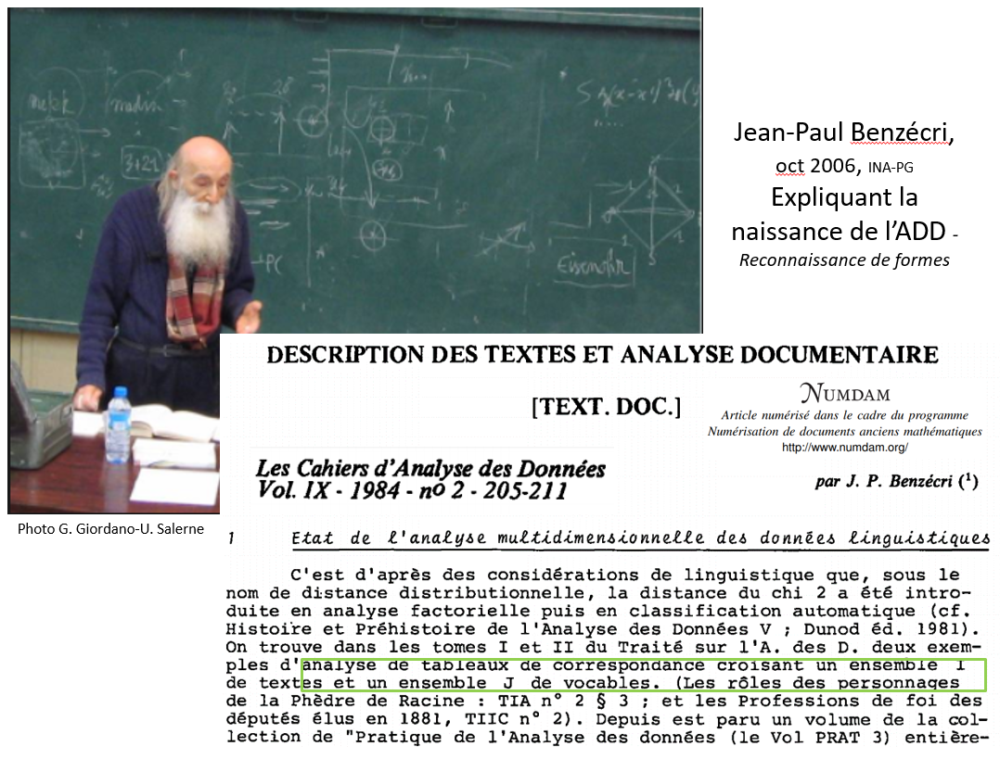
Ensemble de méthodes permettant d’opérer des réorganisations unités textuelles et des analyses statistiques portant sur le vocabulaire d’un corpus de texte (Lebart & Salem, 1994, p.135)
Calcul de répartitions (occurrences). Quels sont les textes les plus semblables en ce qui concerne le vocabulaire et la fréquence des formes utilisées ?
Calcul de spécificités. Quelles sont les formes qui caractérisent chaque texte, par leur présence ou leur absence?
Détection de cooccurrences au moyen de l’analyse géométrique des données pour faire émerger des thématiques sans a priori
Les méthodes s’appliquent à des corpus qui diffèrent par leur nature mais qui sont transformés en tableaux de même structure : les tableaux lexicaux
Le concordancier : indispensable tout au long d’une analyse 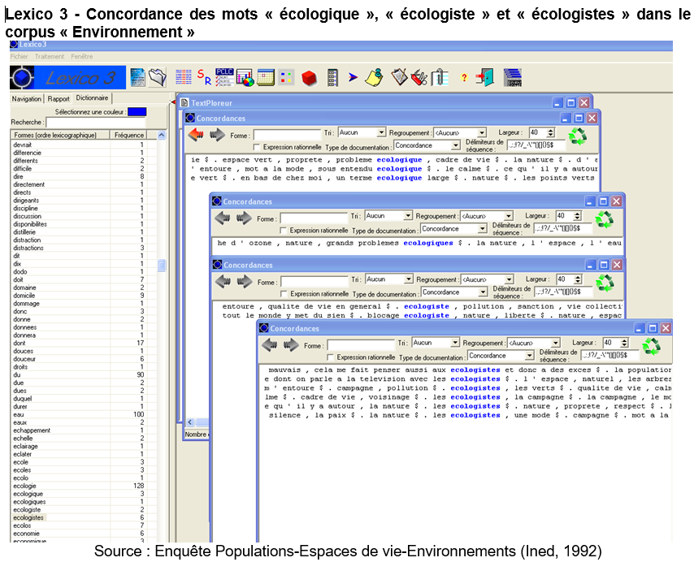
Ensemble des lignes de contexte se rapportant à un même “mot”
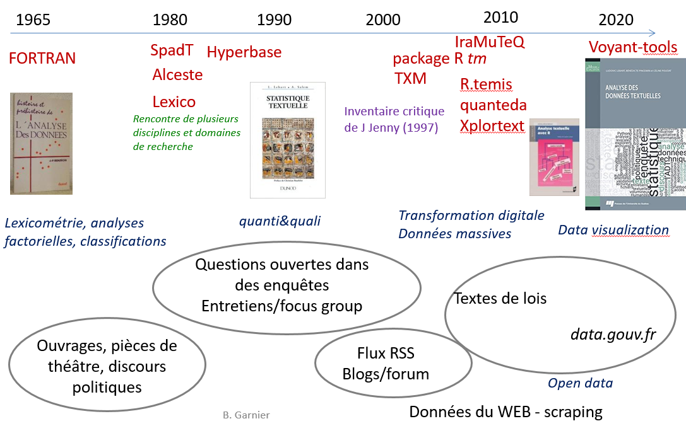
Les questionner, les contextualiser : disponibilités/droits, sources, limites…
Les nettoyer, normaliser, corriger = étape de l’analyse à ne pas sous-estimer
Diffère selon les types de corpus (questions ouvertes, entretiens, romans, articles, pages Web etc..)
Ex. : encodage, orthographe, abreviations …
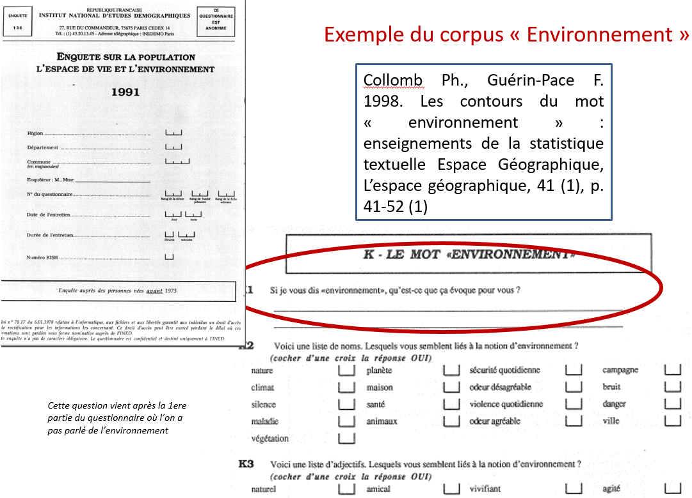
Tableau à double entrée dont les lignes sont constituées par les unités de texte et les colonnes les “mots” du corpus 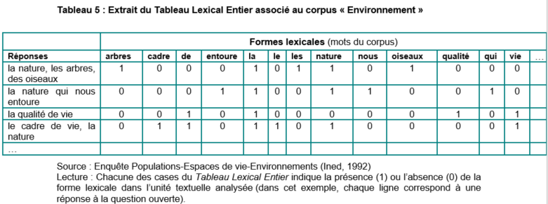
Tableaux dits hyper-creux. Présence/absence de mots dans les textes (Valeur positive ou nulle)
L’ordre des mots n’est pas pris en compte (sacs de mots)
Le calcul d’occurrences revient à s’intéresser à la forme des textes en faisant abstraction de leur structure. Les mots vont constituer le dictionnaire ou lexique associé au corpus et deviennent des descripteurs : les termes
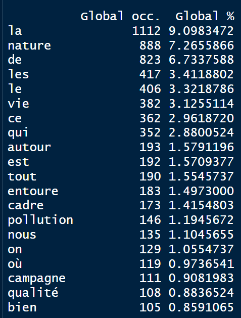
Lecture des mots par ordre de fréquence/ occurrence et ordre alphabétique
Réduire la taille du lexique.
= rattacher un ou plusieurs mots à une forme dite racine (Lebart & Salem, 1994) Convertir :
Opération automatisée avec des dictionnaires et/ou manuelle
Les “mots” ou formes graphiques deviendront alors des formes racine, lemmes, termes …
Les plans factoriels permettent de visualiser des proximités de mots, des oppositions et ainsi de repérer des champs lexicaux
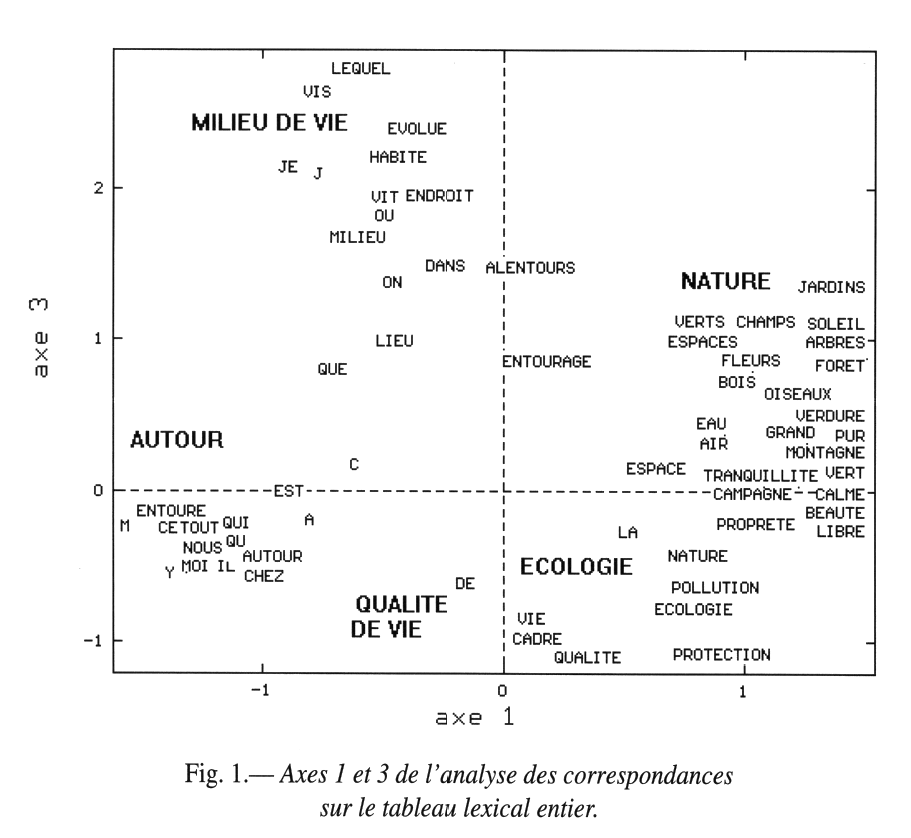
Deux mots sont d’autant plus proches que leurs contextes d’utilisation se ressemblent et d’autant plus éloignés qu’ils sont rarement utilisés ensemble
Obtenir un classement des unités de textes en fonction de la ressemblance ou de la dissemblance des mots dans ces textes et d’ordonner les textes en cernant les homologies et les oppositions (Rouré, Reinert, 1993)
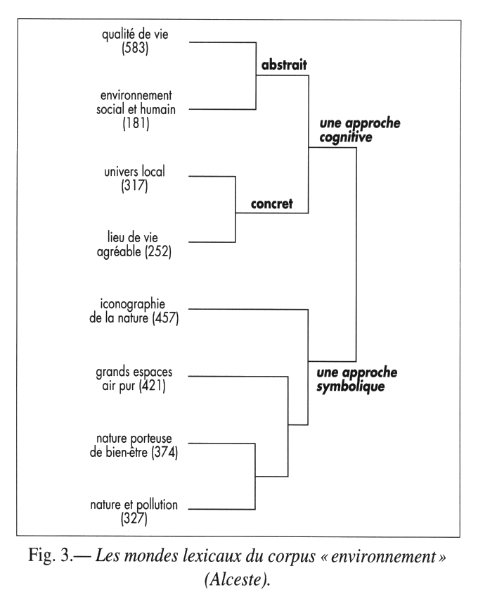
Méthode Alceste ( Reinert, 1983), aujourd’hui implantée dans le package Rainette (J. Barnier)
Utiliser les caractéristiques ou métadonnées des textes pour repérer des structures.
On partitionne le corpus selon les modalités de variables qualitatives
Utilisation d’un test pour dire si l’écart entre la fréquence relative d’une forme dans une partition (par modalité) et la fréquence globale calculée sur l’ensemble des réponses est significatif ou non
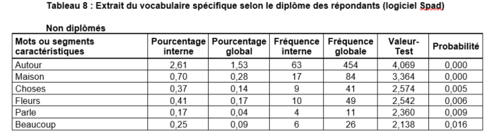
Les mots ou textes caractéristiques de ces partitions sont restitués selon leur degré de spécificité
Tableau de contingence qui croise les mots du lexique et les modalités des métadonnées
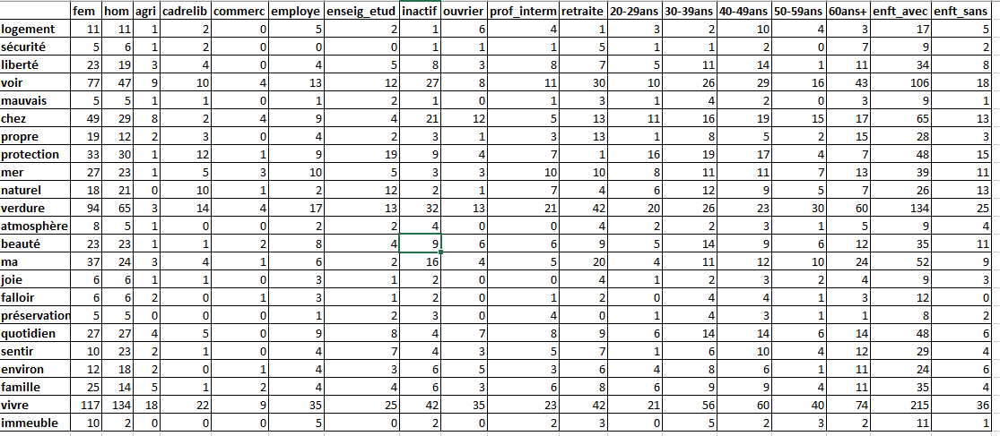
Le plan factoriel permet d’observer la position réciproque des “mots” et des métadonnées et de faire émerger des champs lexicaux propres à des sous-populations
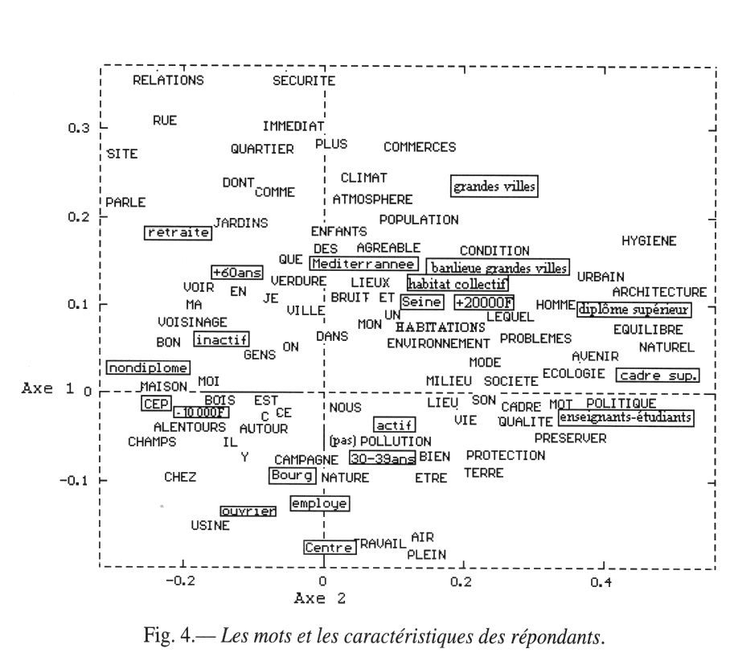
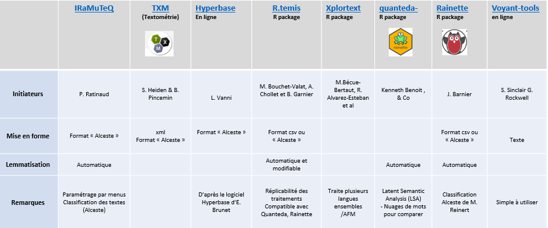
Logiciels historiques (Spad, Lexico, Alceste, Hyperbase) aujourd’hui écrits à partir de R (tm, R.temis, TXM, Quanteda, IRaMuteQ ou Xplortext ….), voir page Ressources
Feinerer, Hornik, Meyer Wirtschaftsuniversity de Wien, in Journal of Statistical Software (Mars 2008)
Facilite les étapes essentielles de l’analyse textuelle en s’appuyant au maximum sur les packages existants (tm, FactoMineR, explor, igraph…) [ R.temis ] :
Calculs statistiques appliqués à des corpus
Chiffres & Mots : Occurrences & Cooccurrences, …
Calcul de spécificités, de profils …
Visualisations : nuages de mots, graphe de mots, plan factoriels (Analyse des correspondances), dendrogrammes (classifications)
Aides à l’interprétation indispensables : les concordances